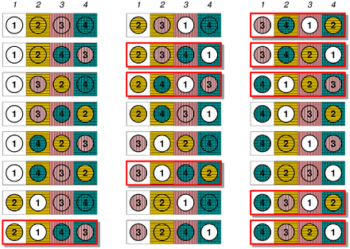
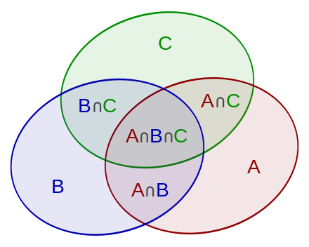
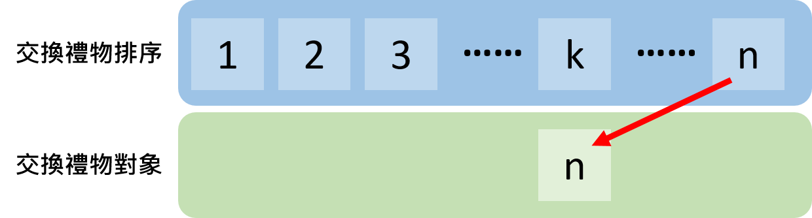
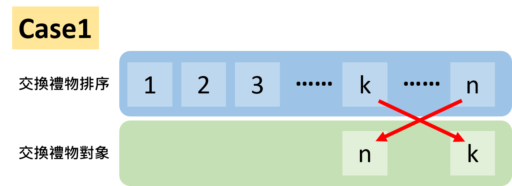
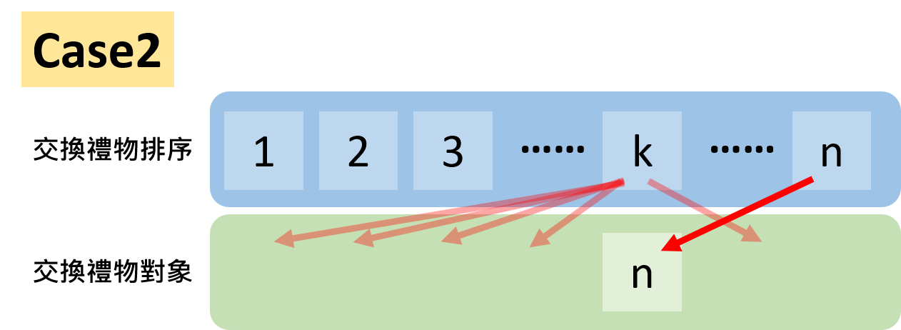
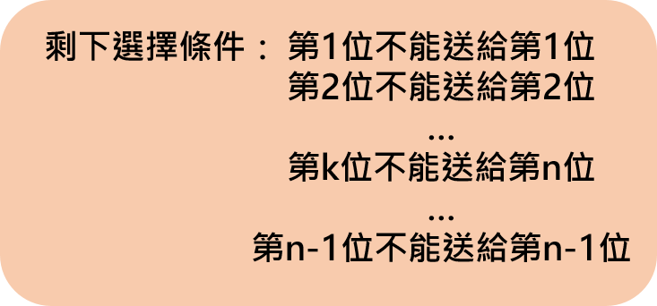

Secret Santa Problem
Introduction
一年一度的聖誕節又要到了，讓大家最期待的無非就是最精彩刺激的交換禮物了！儘管有時候會收到損友們送的垃圾會讓人心情十分不爽，但是交換禮物還是每年必玩的遊戲吧！每次的交換禮物大家都希望可以拿到別人準備的禮物才有刺激和新鮮感，但好像常常都會有倒楣鬼抽到自己的禮物。然而這不是錯覺，而是一個經過嚴格統計結果下來的必然現象！
而這個透過抽籤來分配禮物的數學問題， 又稱作Secret Santa problem。這個問題描述的情境是當一群人以隨機抽籤的方式分配禮物，不管人數的多寡，結果都會有高達63%的機率會有人抽到自己的禮物。也就是每次玩交換禮物就一定有一半的機率以上會有人拿到自己的禮物！

這個結論儘管聽起來令人意外也不符合常理，卻是一個經過嚴謹推導證明的數學結果，但我們卻往往忽略。今天我們就來證明跟推導這個生活化又有趣的Secret Santa Problem吧！下次再玩交換禮物的時候就可以留意這樣的結果會不會發生啦！
Math Approach
那其實這個問題在高一數學的排列組合就已經遇過了，而且是那種最討厭的錯排問題(Derangement)。那這種討人厭的問題又常常被包裝成這種形式，數學考卷上永遠都有迷糊的郵差，這位酒醉的郵差任意把四封信放到對應的信封袋裡，請問全部都裝錯的組合數(機率)為何呢？看到這裡聰明的你馬上就會發現這個問題就跟我們現在要解決的隨機抽籤抽禮物，至少有一人抽到自己禮物的問題是相同的！(事實上這個問題在1708年就被數學家Pierre Raymond de Montmort提出並於1713年解決，又稱作伯努利-歐拉的裝錯信封問題)
那要計算滿足這個條件(完全沒有信封放到正確的信封裡)最簡單的方式就是窮舉法，對於$\mathrm{n=4}$的況下我們總共有$\mathrm{N=}\mathrm{4!}\mathrm{=}\mathrm{24}$種組合數，所以以窮舉列表的方式我們可以快速得到以下的結果

可以發現在種共24種組合下，只有9種情形是完全錯排的結果，也就是說在隨機的條件下只有$\mathrm{P=}\mathrm{9/24}=37.5\%$，約三成的機率可以剛好所有人都拿到不同人的禮物。
那如果我們不用窮舉的方式，高中我們會用排容原理的方式來解決這個問題。相信大部分的讀者都對這個略有印象，所以我們就快速帶過這個得解法。

那要計算所有人都沒拿到自己的信(禮物)，就是所有的可能扣掉有一人拿到自己的禮物(A,B,C,D)，其餘三人亂排，但是會重複扣到兩個人同時拿到自己的禮物(AB、AC、AD、BC、BD、BC共${\mathrm{C}}^{\mathrm{4}}_{\mathrm{2}}=6$種) 其餘二人亂排，但又會多扣到三人同時拿到自己禮物的狀況(ABC、BCD、ACD、ABD共${\mathrm{C}}^{\mathrm{4}}_{\mathrm{3}}=4$種) 其餘一人亂排，最後又要再扣掉所有人同時拿到自己的狀況(ABCD共${\mathrm{C}}^{\mathrm{4}}_{\mathrm{4}}=1$種)。
所以機率就是
\[\mathrm{P=}\mathrm{1-}\frac{C^4_13!-C^4_22!+C^4_31!-C^4_10!}{\mathrm{4!}}\mathrm{=1-}\frac{15}{\mathrm{24}}=\frac{9}{24}=37.5\%\]
那這樣的問題對於解決少數人或許可以解答，但當人數增加以後，又更好的處理方法嗎？那這邊我們提供一個有趣的解法，利用遞迴的方式我們可以得到$n$人錯排的通解表達式！
Derangement
Recursion Formula
首先我們先定義我們的符號， 我們以$D_n$來表示$n$人的錯排組合數，我們先考慮前幾項邊界條件的值：對於1人的狀態，由於沒有人可以錯排所以明顯的$D_1=0$；而兩人的狀態，能錯排的唯一解就是兩個人互換的狀態，因此$D_2=1$。在完成這樣的初始值以後，我們來思考這樣錯排條件的遞迴關係式要怎麼建立吧，只要有了遞迴以及初始值我們就可以推導出$n$人錯排的一般表示式$D_n$了！
那要考慮$n$人的錯排組合數，我們不妨先將所有人先排好後編號從$1\sim n$，接著在不失一般性的情形下，我們先考慮遞$n$位的禮物要給的對象，假設是第$k$位。

那麼接下來第$k$位有兩種選擇，第一種選擇是將禮物反送給第$n$位的人，第二種選擇是將禮物送給第$n$位以外的人。因此$D_n$的組合數就將會是這兩種組合數的總和。
那麼我們就先考慮一種選擇的狀況，若是$k$與$n$互送的情形，則因為第$n$位在選擇送禮物時總共有$\left(n-1\right)$種選擇，接著在兩人互送完以後全部就剩下$\left(n-2\right)$個人尚未交換禮物，因此剩下的組合數就是$D_{n-2}$，也就是說第一種選擇的組合數就是

\[D_n\left(Case1\right)=\left(n-1\right)D_{n-2}\]
讀到這裡有感受到一點遞迴的感覺了嗎？我們就是考慮第$n$位在做選擇時的選擇狀態，那選完以後剩下的先前狀態，又可以在遞迴到下一層的狀態直到我們一開始就考慮的$D_1=0$以及$D_2=1$的條件為止。話不多說我們也把case2的狀態討論完畢就可以得到$D_n$的所有遞迴關係了！
對於Case2，就是在第$k$位收到第$n$位的禮物後，他不能回送給第$n$位的狀態，那對於k來講，他可以選擇送1也好，2也好...送k-1位也好...送n-1也可以，就是不能送給第$n$位。

那在這樣的條件下，我們就回到類似這樣的錯排條件，對於所有人初始的條件就是不能送給自己，只有第$k$位的條件不能送給第$n$位，那其實這樣的結果就是有$\left(n-1\right)$個人要錯排的情形了也就是說有$D_{n-1}$種選擇數了！

在理解這樣的詮釋後，別忘了一開始的第$k$位本來就保有$\left(n-1\right)$種選擇權，所以case2的所有組合數也就是
\[D_n\left(case2\right)=\left(n-1\right)D_{n-1}\]
所以我們終於完成了$n$個人錯排列$D_n$的所有組合情形($n$排完以後$k$的兩種選擇)
\[D_n=D_n\left(Case1\right)+D_n\left(case2\right)=\left(n-1\right)D_{n-2}+\left(n-1\right)D_{n-1}\]
合併以後我們就得到了最著名的錯排列遞迴關係式；
\[\ D_n=\left(n-1\right)\left(D_{n-1}+D_{n-2}\right)\]
那這個最有趣的點是說，它有別於高中用組合排列以及排容原理的方式來解決小問題，他直接在找完初始條件以後，直接開大決分析n個人的狀況，再將問題往下分析切成小問題去考慮各種狀況以得到遞迴關係式的樣子！那這樣的思考模式和分析方法就是資工系在演算法處理問題所用的DP概念，Divide and conquer，將大問題切成小問題以得到遞迴關係式！(註：遞迴關係式對演算法是非常實用的，因為僅需使用for、if、while 等loop就可以讓電腦快速的執行迴圈以計算答案！)
好啦，在計算完這樣的問題以後，其實我們就可以打開電腦寫個簡單的迴圈快速執行得到不同人數的錯排組合數了。但是我們也可以用傳統的方式去解析著個遞迴關係式以便把我們的初始值帶入得到最後$D_n$的一般解。因此接下來我們就用點數學手法，大家可以就當作欣賞即可，導出最後的錯排組合數公式$D_n=n!\sum^n_{k=2}{\frac{{\left(-1\right)}^k}{k!}}$
那事不宜遲，我們就先從我們剛剛得到的遞迴關係式做點展開和移項
\[D_n=\left(n-1\right)\left(D_{n-1}+D_{n-2}\right)\ \ \ \mathrm{,\ }D_1=0\ ,\ D_2=1\]
\[\ D_n=nD_{n-1}-D_{n-1}+nD_{n-1}-D_{n-2}\]
\[D_n-nD_{n-1}=-\left(D_{n-1}-\left(n-1\right)D_{n-2}\right)\]
寫到這裡可以發現左有兩遍的項存在這一個與項數有關的比例係數，我們可以多列幾式就可以將所有式子相乘相消，是滿常見的數學手法
將不同的n帶入剛剛做了點''整容變形''的遞迴關係式，我們可以得到
\[D_3-3D_2=-\left(D_2-\left(3-1\right)D_1\right)\]
\[D_4-4D_3=-\left(D_3-\left(4-1\right)D_2\right)\]
\[D_5-5D_4=-\left(D_4-\left(5-1\right)D_3\right)\]
\[\dots \]
\[D_n-nD_{n-1}=-\left(D_{n-1}-\left(n-1\right)D_{n-2}\right)\]
那以上我們列出了帶入$n=3,4,5,\dots ,n$的情形，可以發現每一式的左式可以跟下一行的右式相消，最後得到
\[D_n-nD_{n-1}={\left(-1\right)}^{n-2}\left(D_2-\left(3-1\right)D_1\right)\]
那現在我們終於可以把我們辛苦得到的遞迴關係式套上我們的初始條件$D_1=0\ ,\ D_2=1$ 得到
\[D_n-nD_{n-1}={\left(-1\right)}^n\]
移項整理得到
\[D_n={\left(-1\right)}^n+nD_{n-1}\]
那這裡我們已經把$D_n$整理成只剩下$D_{n-1}$ 的關係式了，那在做一次類似的手法我們就可以得到$D_n$的一般式了！
這裡我們列出了將$n=3,4,5,\dots ,n$帶入上式的結果
\[D_2={\left(-1\right)}^2+2D_1\]
\[D_3={\left(-1\right)}^3+3D_2\]
\[D_4={\left(-1\right)}^4+4D_3\]
\[D_5={\left(-1\right)}^5+5D_4\]
\[D_n={\left(-1\right)}^n+nD_{n-1}\]
會發現左有兩式的$D_n$似乎可以消掉，但是每項存在了跟$n$有關的係數，不過別怕！這只是小事，大不了我們就把這些煩人的係數通通除掉吧！
那接下來我就將每一式右式的係數調整到跟上左式相同的係數，最後就會發現變成這樣了：
\[D_2={\left(-1\right)}^2+2D_1\]
\[{\frac{1}{3}D}_3=\frac{1}{3}{\left(-1\right)}^3+\frac{3}{3}D_2\]
\[\frac{1}{3\times 4}D_4={\frac{1}{3\times 4}\left(-1\right)}^4+\frac{4}{3\times 4}D_3\]
\[\frac{1}{3\times 4\times 5}D_5={\frac{1}{3\times 4\times 5}\left(-1\right)}^5+\frac{5}{3\times 4\times 5}D_4\]
\[\mathrm{\dots \dots \dots }\]
\[\frac{1}{3\times 4\times 5\times \dots \times n}D_n={\frac{1}{3\times 4\times 5\times \dots \times n}\left(-1\right)}^n+\frac{n}{3\times 4\times 5\dots \times n}D_{n-1}\]
(迷之音這個展開式長得也挺項聖誕樹的嘛XD)
好啦，終於來到最後一步了我們終於調整到所有的$D_n$係數都幾乎相同了，那在使用我們的相加大法，並把相同係數左右的${\mathrm{D}}_{\mathrm{n}}$相消掉。可以得到
\[\frac{1}{3\times 4\times \dots \times n}D_n+D_2={\left(-1\right)}^2+\frac{1}{3}{\left(-1\right)}^3+{\frac{1}{3\times 4}\left(-1\right)}^4+\dots +{\frac{1}{3\times 4\times 5\times \dots \times n}\left(-1\right)}^n+2D_1\]
將兩邊分子分母通乘2
\[\frac{2}{n!}D_n+2D_2=2\left(\frac{{\left(-1\right)}^2}{2!}+\frac{{\left(-1\right)}^3}{3!}+\frac{{\left(-1\right)}^4}{4!}+\dots +\frac{{\left(-1\right)}^n}{n!}\right)\]
最後經過移項，finally ，我們得到這樣的$D_n$一般式
\[D_n=n!\sum^n_{k=2}{\frac{{\left(-1\right)}^k}{k!}}\]
終於到這裡了我們可以證明我們的Secret Santa Problem的結論，
當n趨近於無限大(其實只要大於5就可以了)，交換禮物至少有一人抽到自己禮物的機率會是63%
Proof
交換禮物有人抽到自己的禮物就是所有的可能扣掉錯排列的組合數，因此機率就是
\[P=1-\frac{D_n}{n!}\mathrm{=1-}\sum^n_{k=2}{\frac{{\left(-1\right)}^k}{k!}}=1-\left(\frac{1}{2!}-\frac{1}{3!}+\frac{1}{4!}-\dots +\frac{{\left(-1\right)}^n}{n!}\right)\]
別忘了
\[e^x=1+x+\frac{x^2}{2!}+\frac{x^3}{3!}+\dots +\frac{x^n}{n!}\]
\[e^{-1}=\frac{1}{2!}-\frac{1}{3!}+\frac{1}{4!}-\dots +\frac{{\left(-1\right)}^n}{n!}\]
因此我們的機率
\[P=1-\frac{1}{e}=0.632\]
證明了有高達63%的機率會交換禮物會有人抽到自己禮物的情形！
所以說，下次玩交換禮物的時候也留意一下這個奇怪又有趣的統計現象吧！
最後K!W! BiRD 也在這裡祝各位有個美好又充滿科學的聖誕節快樂! Merry Christmas!